pacman::p_load(sf,tmap,tidyverse,spatstat,raster,sparr,spdep,sfdep,spgwr,exactextractr)Take Home Exercise 3
# Import administrative boundary data for vietnam
boundary_data <- st_read(dsn="data/geospatial",
layer = "vnm_admbnda_adm1_gov_20201027")Reading layer `vnm_admbnda_adm1_gov_20201027' from data source
`C:\edwing444\IS415-GAA\Take_Home_Ex\Take_home_ex3\data\geospatial'
using driver `ESRI Shapefile'
Simple feature collection with 63 features and 16 fields
Geometry type: MULTIPOLYGON
Dimension: XY
Bounding box: xmin: 102.144 ymin: 7.180931 xmax: 117.8355 ymax: 23.39221
Geodetic CRS: WGS 84boundary_data <- boundary_data %>%
dplyr::select(-ADM1_VI,-ADM1_REF,-ADM1ALT1EN,-ADM1ALT2EN,-ADM1ALT1VI,-ADM0_EN,-ADM0_PCODE,-ADM1ALT2EN, -ADM1ALT2VI, -ADM0_VI,-date,-validOn,-validTo) %>%
rename(province = ADM1_EN)plot(boundary_data)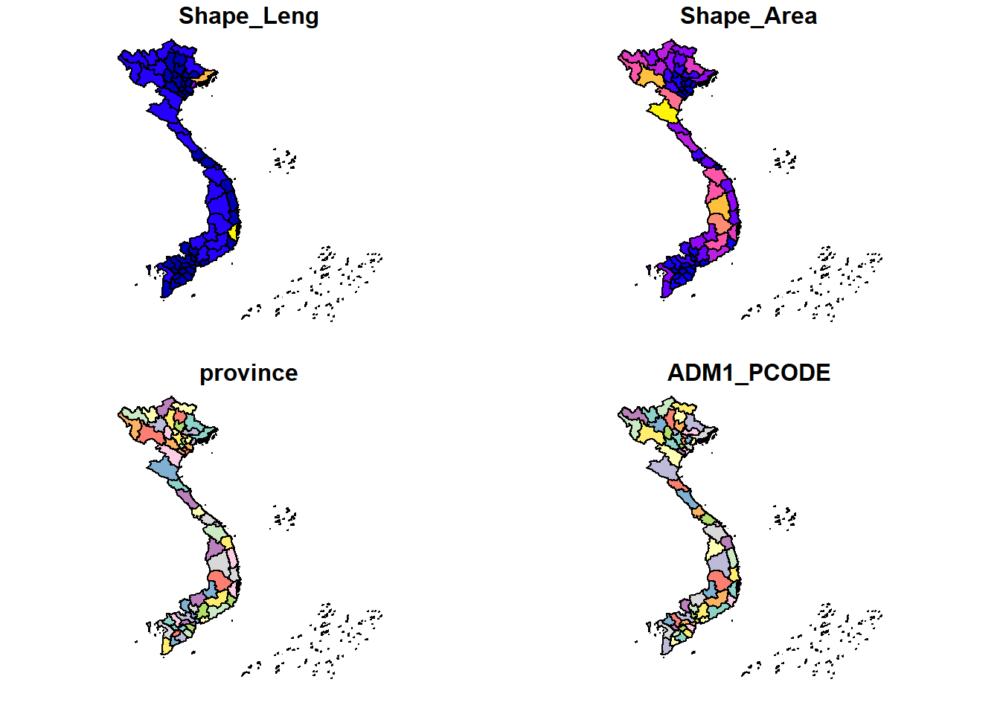
doc_data <- read.csv("data/aspatial/doctors.csv")doc_data <- doc_data %>%
rename(province=Cities..Provinces,
Y2018=X2018,
Y2019=X2019,
Y2020=X2020,
Y2022=Prel..2022)doc_data <- boundary_data %>%
left_join(doc_data, by = "province")doc_data <- doc_data %>%
filter(!is.na(Y2018))# Example: KDE (if you have point data)
tm_shape(doc_data) +
tm_polygons("X2021",
title = "Number of doctors",
palette = "Oranges",
style = "cont") + # Continuous color scale
tm_layout(main.title = "Number of doctors",
legend.outside = TRUE)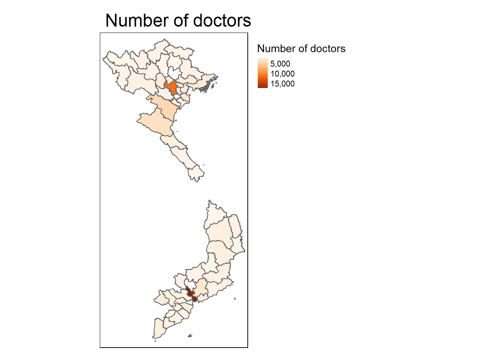
poverty_data <- read.csv("data/aspatial/poverty_rate.csv")poverty_data <- boundary_data %>%
left_join(poverty_data, by = "province")
poverty_data <- poverty_data %>%
filter(!is.na(Y2012))tm_shape(poverty_data) +
tm_polygons("Y2014",
title = "Poverty rate",
palette = "Oranges",
style = "cont") + # Continuous color scale
tm_layout(main.title = "Poverty rate",
legend.outside = TRUE)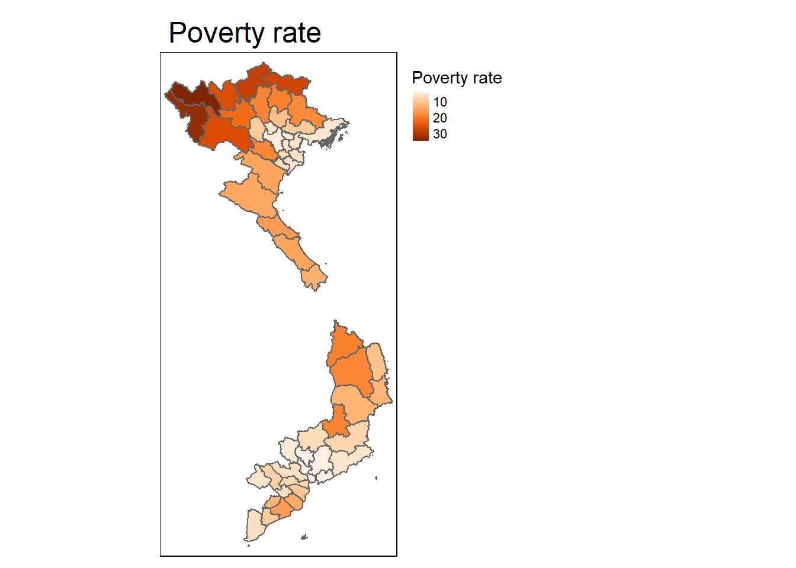
income_data <- read.csv("data/aspatial/avg_income.csv")income_data <- boundary_data %>%
left_join(income_data, by = "province")tm_shape(income_data) +
tm_polygons("Y2021",
title = "income_data",
palette = "Oranges",
style = "cont") + # Continuous color scale
tm_layout(main.title = "income_data",
legend.outside = TRUE)
hdi_data <- read.csv("data/aspatial/hdi.csv")hdi_data <- boundary_data %>%
left_join(hdi_data, by = "province")
hdi_data <- hdi_data %>%
filter(!is.na(Y2018))tm_shape(hdi_data) +
tm_polygons("Y2021",
title = "HDI",
palette = "Blues", # Use a color palette that intuitively matches the meaning of the data
style = "quantile", # Use quantile breaks to divide into equal population groups
n = 5, # Five different levels (can adjust depending on the distribution)
border.col = "white", # Use a light border for better visual separation
border.alpha = 0.5) +
tm_text("province",
size = 0.7,
col = "darkblue",
remove.overlap = TRUE) + # Add country labels, only showing non-overlapping text
tm_borders(lwd = 0.5, col = "gray", alpha = 0.8) + # Add subtle borders to enhance readability
tm_legend(title.size = 1.5,
text.size = 1.0,
outside = TRUE,
frame = TRUE) + # Adjust legend size and position for clarity
tm_layout(main.title = "Human Development Index (HDI) 2021",
main.title.size = 2.0, # Larger title for emphasis
frame = FALSE, # Remove map frame for a cleaner look
inner.margins = c(0.05, 0.1, 0.05, 0.1)) + # Adjust margins to make the map more central
tm_credits("Source: UNDP, 2021",
position = c("RIGHT", "BOTTOM"),
size = 0.7, col = "black") + # Add credits for data source
tm_compass(position = c("left", "top"), size = 2) + # Add compass to orient map
tm_scale_bar(position = c("left", "bottom"), width = 0.15) # Add scale bar for distance referenceWarning: One tm layer group has duplicated layer types, which are omitted. To
draw multiple layers of the same type, use multiple layer groups (i.e. specify
tm_shape prior to each of them).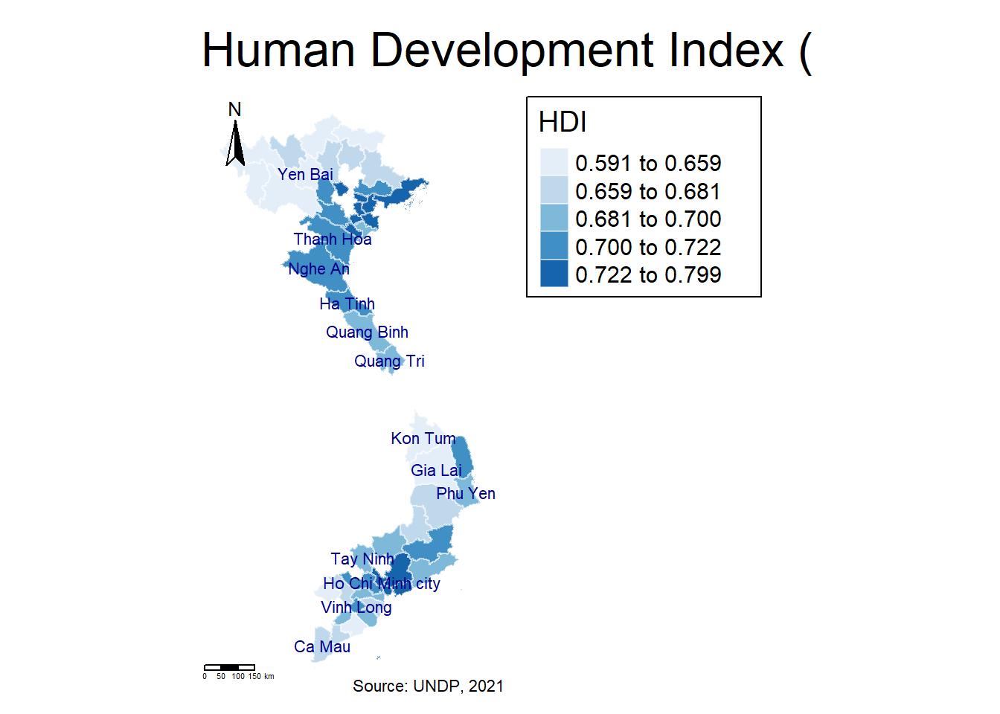
income_inequality_data <- read.csv("data/aspatial/income_inequality.csv")income_inequality_data <- boundary_data %>%
left_join(income_inequality_data, by = "province")
income_inequality_data <- income_inequality_data %>%
filter(!is.na(X2018))tm_shape(income_inequality_data) +
tm_polygons("X2021",
title = "income_inequality_data",
palette = "Oranges",
style = "cont") + # Continuous color scale
tm_layout(main.title = "income_inequality_data",
legend.outside = TRUE)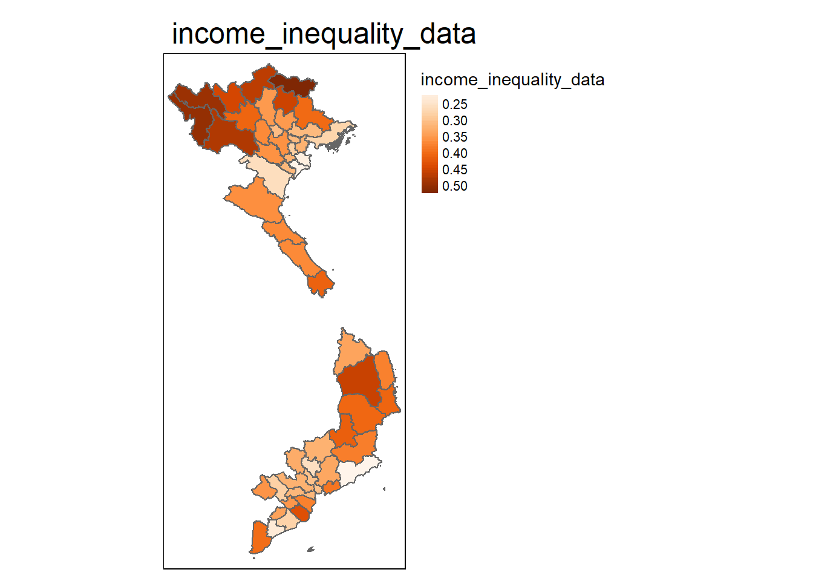
solid_waste_data <- read.csv("data/aspatial/solid_waste.csv")solid_waste_data <- boundary_data %>%
left_join(solid_waste_data, by = "province")
solid_waste_data <- solid_waste_data %>%
filter(!is.na(X2018))tm_shape(solid_waste_data) +
tm_polygons("X2018",
title = "solid_waste_data",
palette = "Oranges",
style = "cont") + # Continuous color scale
tm_layout(main.title = "solid_waste_data",
legend.outside = TRUE)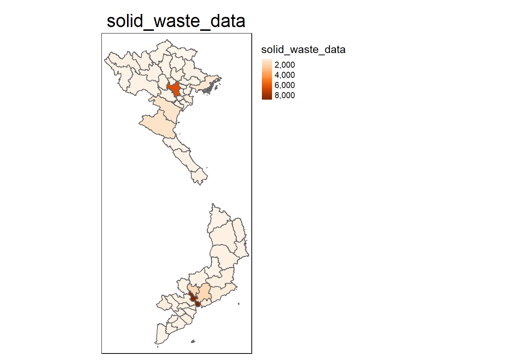
# Create a spatial weights matrix
coords <- st_coordinates(st_centroid(hdi_data))Warning: st_centroid assumes attributes are constant over geometriesnb <- knn2nb(knearneigh(coords, k = 4)) # K-nearest neighbors
lw <- nb2listw(nb, style = "W")# Calculate local Moran's I for each region
local_moran <- localmoran(hdi_data$Y2021, lw)
# Add the results to the data for visualization
hdi_data$local_moran <- as.numeric(local_moran[, "Ii"])# Create the LISA cluster map
tm_shape(hdi_data) +
tm_polygons("local_moran",
title = "Local Moran's I (HDI Clusters)",
palette = "RdBu",
style = "cont") +
tm_layout(main.title = "LISA Cluster Map: HDI",
legend.outside = TRUE)Variable(s) "local_moran" contains positive and negative values, so midpoint is set to 0. Set midpoint = NA to show the full spectrum of the color palette.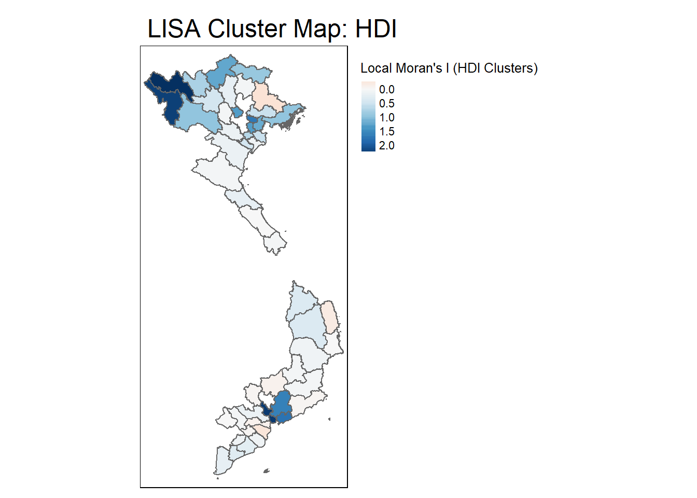
# Calculate Getis-Ord Gi* statistic for each region
gi_star <- localG(hdi_data$Y2021, lw)
# Add Gi* values to the data
hdi_data$gi_star <- as.numeric(gi_star)
# Create a hotspot map
tm_shape(hdi_data) +
tm_polygons("gi_star",
title = "Getis-Ord Gi* (HDI Hotspots)",
palette = "YlOrRd",
style = "cont") +
tm_layout(main.title = "Hotspot Analysis: HDI",
legend.outside = TRUE)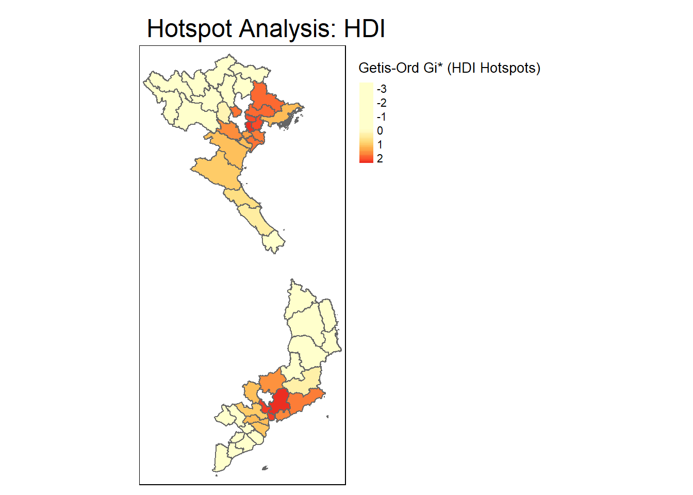
hdi_test_data <- read.csv("data/aspatial/hdi_test.csv")hdi_test_data <- boundary_data %>%
left_join(hdi_test_data, by = "province")
hdi_test_data <- hdi_test_data %>%
filter(!is.na(Y2018))# GWR formula, assuming "literacy_rate" is a variable in your dataset
gwr_model <- gwr(Y2021 ~ income, data = hdi_test_data, coords = coords, bandwidth = 50)
# Add GWR results to the data
hdi_test_data$gwr_residuals <- gwr_model$lm$residuals
# Create a map of residuals
tm_shape(hdi_test_data) +
tm_polygons("gwr_residuals",
title = "GWR Residuals (HDI)",
palette = "-orange",
style = "cont") +
tm_layout(main.title = "GWR Residuals Map: HDI vs. Literacy",
legend.outside = TRUE)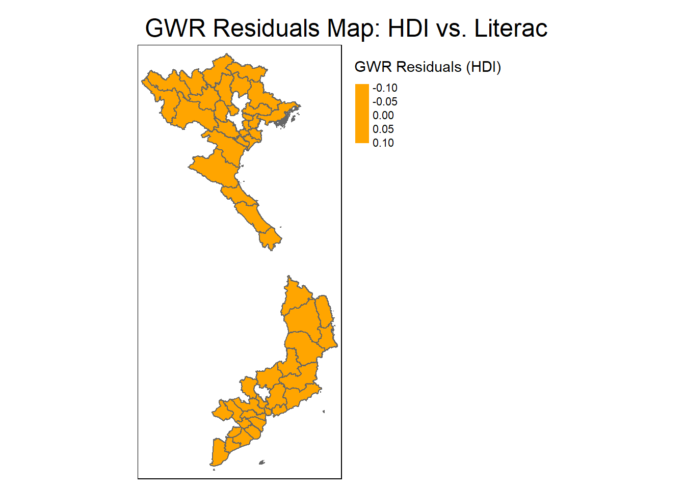
doc_coords_sf <- st_as_sf(doc_data)# KDE raster layer + Healthcare facility points# Reproject the data to a projected coordinate system (VN-2000, EPSG:3405)
boundary_data <- st_transform(boundary_data, crs = 3405)
doc_data <- st_transform(doc_data, crs = 3405)# Extract the coordinates of healthcare facilities
doc_coords <- st_coordinates(doc_data)
# Define the observation window using the boundary data
window <- as.owin(boundary_data)
# Create the `ppp` object without marks (just the coordinates)
doc_ppp <- ppp(x = doc_coords[,1], y = doc_coords[,2], window = window)Warning: point-in-polygon test had difficulty with 905 points (total score not
0 or 1)Warning: 18165 points were rejected as lying outside the specified windowWarning: data contain duplicated points# Apply kernel density estimation
kde_doc <- density(doc_ppp, sigma=bw.diggle,
edge=TRUE,
kernel="gaussian")
# Plot the density result
plot(kde_doc, main = "Kernel Density of Healthcare Facilities")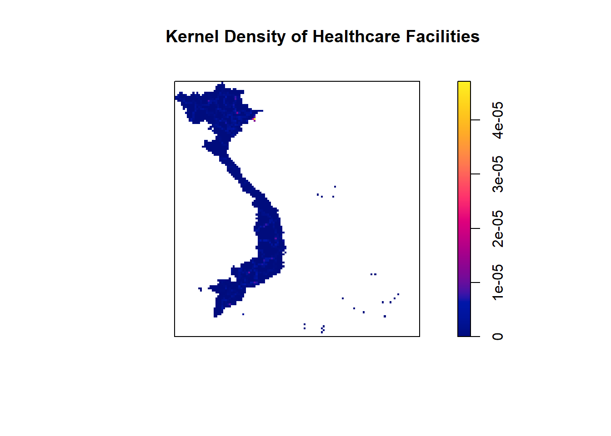
# Convert the kernel density result to a raster format
kde_raster <- raster(kde_doc)
tm_shape(boundary_data) +
tm_borders(lwd = 1.5, col = "black") + # Thicker borders with black color for clarity
tm_shape(kde_raster) +
tm_raster(palette = "Blues", style = "cont", alpha = 0.7,
title = "Density of Conflict Events",
breaks = seq(0, max(values(kde_raster), na.rm = TRUE), length.out = 7)) + # Customize breaks
tm_layout(title = "Kernel Density of Armed Conflict Events",
title.size = 1.2,
legend.outside = TRUE, # Position legend outside for better readability
legend.outside.position = "right", # Move legend to the right side
legend.title.size = 1,
legend.text.size = 0.8,
frame = FALSE) + # Turn off outer frame
tm_scale_bar(position = c("left", "bottom"), text.size = 0.7) + # Add a scale bar
tm_compass(type = "8star", position = c("right", "top")) # Add a north arroWarning: Current projection of shape kde_raster unknown and cannot be
determined.Warning: Values have found that are less than the lowest break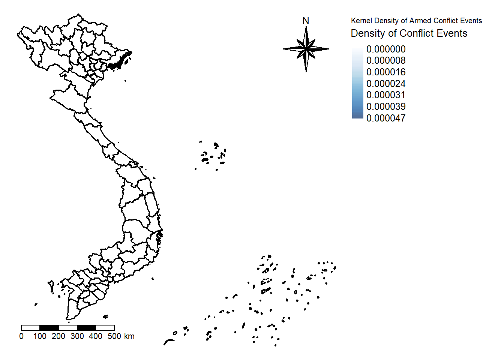